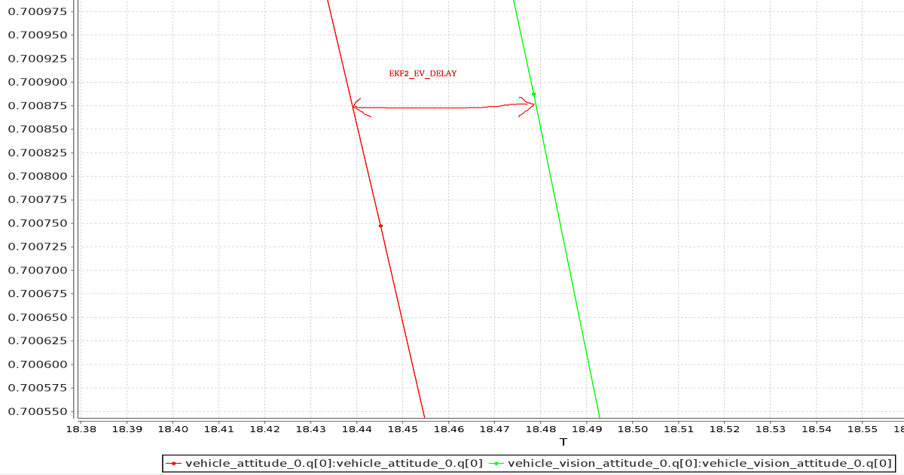

Using Vision or Motion Capture Systems for Position Estimation
Visual Inertial Odometry (VIO) and and Motion Capture (MoCap) systems allow vehicles to navigate when a global position source is unavailable or unreliable (e.g. indoors, or when flying under a bridge. etc.).
Both VIO and MoCap determine a vehicle's pose (position and attitude) from "visual" information. The main difference between them is the frame perspective:
- VIO uses onboard sensors to get pose data from the vehicle's perspective (see egomotion).
- MoCap uses a system of off-board cameras to get vehicle pose data in a 3D space (i.e. it is an external system that tells the vehicle its pose).
Pose data from either type of system can be used to update a PX4-based autopilot's local position estimate (relative to the local origin) and also can optionally also be fused into the vehicle attitude estimation. Additionally, if the external pose system also provides linear velocity measurements, it can be used to improve the state estimate (fusion of linear velocity measurements is only supported by the EKF2).
This topic explains how to configure a PX4-based system to get data from MoCap/VIO systems (either via ROS or some other MAVLink system) and more specifically how to set up MoCap systems like VICON and Optitrack, and vision-based estimation systems like ROVIO, SVO and PTAM).
The instructions differ depending on whether you are using the EKF2 or LPE estimator.
PX4 MAVLink 통합
PX4 uses the following MAVLink messages for getting external position information, and maps them to uORB topics:
| MAVLink | uORB |
|---|---|
| VISION_POSITION_ESTIMATE | vehicle_visual_odometry |
ODOMETRY (frame_id = MAV_FRAME_LOCAL_FRD) |
vehicle_visual_odometry |
| ATT_POS_MOCAP | vehicle_mocap_odometry |
ODOMETRY (frame_id = MAV_FRAME_MOCAP_NED) |
vehicle_mocap_odometry |
EKF2 only subscribes to vehicle_visual_odometry topics and can hence only process the first two messages (a MoCap system must generate these messages to work with EKF2). The odometry message is the only message that can send also linear velocities to PX4. The LPE estimator subscribes to both topics, and can hence process all the above messages.
EFK2 is the default estimator used by PX4. It is better tested and supported than LPE, and should be used by preference.
The messages should be streamed at between 30Hz (if containing covariances) and 50 Hz.
The following MAVLink "vision" messages are not currently supported by PX4: GLOBAL_VISION_POSITION_ESTIMATE, VISION_SPEED_ESTIMATE, VICON_POSITION_ESTIMATE
참조 프레임
PX4 uses FRD (X Forward, Y Right and Z Down) for the local body frame as well for the reference frame. When using the heading of the magnetometer, the PX4 reference frame x axis will be aligned with north, so therefore it is called NED (X North, Y East, Z Down). The heading of the reference frame of the PX4 estimator and the one of the external pose estimate will not match in most cases. Therefore the reference frame of the external pose estimate is named differently, it is called MAV_FRAME_LOCAL_FRD.
Depending on the source of your reference frame, you will need to apply a custom transformation to the pose estimate before sending the MAVLink Vision/MoCap message. This is necessary to change the orientation of the parent and child frame of the pose estimate, such that it fits the PX4 convention. Have a look at the MAVROS odom plugin for the necessary transformations.
ROS users can find more detailed instructions below in Reference Frames and ROS.
For example, if using the Optitrack framework the local frame has and on the horizontal plane (x front and z right) while y axis is vertical and pointing up. A simple trick is swapping axis in order to obtained NED convention.
If x_{mav}, y_{mav} and z_{mav} are the coordinates that are sent through MAVLink as position feedback, then we obtain:
x_{mav} = x_{mocap}
y_{mav} = z_{mocap}
z_{mav} = - y_{mocap}
Regarding the orientation, keep the scalar part w of the quaternion the same and swap the vector part x, y and z in the same way. You can apply this trick with every system - if you need to obtain a NED frame, look at your MoCap output and swap axis accordingly.
EKF2 조율/설정
Note: 간단한 개요 내용입니다. 더 자세한 내용은 EKF2 조율 안내서를 참고 하십시오
EKF2의 외부 위치 정보를 활용하려면 다음 매개변수를 설정해야합니다(QGroundControl > Vehicle Setup > Parameters > EKF2에서 설정 가능).
| 매개변수 | 외부 위치 추정 설정 |
|---|---|
| EKF2_AID_MASK | Set vision position fusion, vision velocity fusion, vision yaw fusion and external vision rotation accoring to your desired fusion model. |
| EKF2_HGT_MODE | Set to Vision to use the vision a primary source for altitude estimation. |
| EKF2_EV_DELAY | Set to the difference between the timestamp of the measurement and the "actual" capture time. For more information see below. |
| EKF2_EV_POS_X, EKF2_EV_POS_Y, EKF2_EV_POS_Z | Set the position of the vision sensor (or MoCap markers) with respect to the robot's body frame. |
바뀐 매개변수 값을 적용하려면 비행체 제어 장치를 다시 부팅하십시오.
Tuning EKF2_EV_DELAY
EKF2_EV_DELAY is the Vision Position Estimator delay relative to IMU measurements.
Or in other words, it is the difference between the vision system timestamp and the "actual" capture time that would have been recorded by the IMU clock (the "base clock" for EKF2).
Technically this can be set to 0 if there is correct timestamping (not just arrival time) and timesync (e.g NTP) between MoCap and (for example) ROS computers. In reality, this needs some empirical tuning since delays in the entire MoCap->PX4 chain are very setup-specific. It is rare that a system is setup with an entirely synchronised chain!
A rough estimate of the delay can be obtained from logs by checking the offset between IMU rates and the EV rates:

A plot of external data vs. onboard estimate (as above) can be generated using FlightPlot or similar flight analysis tools.
The value can further be tuned by varying the parameter to find the value that yields the lowest EKF innovations during dynamic maneuvers.
LPE 조율/설정
You will first need to switch to the LPE estimator by setting the SYS_MC_EST_GROUP parameter.
If targeting
px4_fmu-v2hardware you will also need to use a firmware version that includes the LPE module (firmware for other FMU-series hardware includes both LPE and and EKF). The LPE version can be found in the zip file for each PX4 release or it can be built from source using the build commandmake px4_fmu-v2_lpe. See Building the Code for more details.
외부 자세 데이터 입력 활성화
LPE의 외부 위치 정보를 활용하려면 다음 매개변수를 설정해야합니다(QGroundControl > Vehicle Setup > Parameters > Local Position Estimator에서 설정 가능).
| 매개변수 | 외부 위치 추정 설정 |
|---|---|
| LPE_FUSION | Vision integration is enabled if fuse vision position is checked (it is enabled by default). |
| ATT_EXT_HDG_M | Set to 1 or 2 to enable external heading integration. Setting it to 1 will cause vision to be used, while 2 enables MoCap heading use. |
기압 센서 병용 비활성
If a highly accurate altitude is already available from VIO or MoCap information, it may be useful to disable the baro correction in LPE to reduce drift on the Z axis.
This can be done by in QGroundControl by unchecking the fuse baro option in the LPE_FUSION parameter.
잡음 매개변수 미세조정
If your vision or MoCap data is highly accurate, and you just want the estimator to track it tightly, you should reduce the standard deviation parameters: LPE_VIS_XY and LPE_VIS_Z (for VIO) or LPE_VIC_P (for MoCap). Reducing them will cause the estimator to trust the incoming pose estimate more. You may need to set them lower than the allowed minimum and force-save.
If performance is still poor, try increasing the LPE_PN_V parameter. This will cause the estimator to trust measurements more during velocity estimation.
Working with ROS
ROS is not required for supplying external pose information, but is highly recommended as it already comes with good integrations with VIO and MoCap systems. PX4 must already have been set up as above.
Getting Pose Data Into ROS
VIO and MoCap systems have different ways of obtaining pose data, and have their own setup and topics.
The setup for specific systems is covered below. For other systems consult the vendor setup documentation.
Relaying Pose Data to PX4
MAVROS has plugins to relay a visual estimation from a VIO or MoCap system using the following pipelines:
| ROS | MAVLink | uORB |
|---|---|---|
| /mavros/vision_pose/pose | VISION_POSITION_ESTIMATE | vehicle_visual_odometry |
/mavros/odometry/out (frame_id = odom, child_frame_id = base_link) |
ODOMETRY (frame_id = MAV_FRAME_LOCAL_FRD) |
vehicle_visual_odometry |
| /mavros/mocap/pose | ATT_POS_MOCAP | vehicle_mocap_odometry |
/mavros/odometry/out (frame_id = odom, child_frame_id = base_link) |
ODOMETRY (frame_id = MAV_FRAME_LOCAL_FRD) |
vehicle_mocap_odometry |
You can use any of the above pipelines with LPE.
If you're working with EKF2, only the "vision" pipelines are supported. To use MoCap data with EKF2 you will have to remap the pose topic that you get from MoCap:
- MoCap ROS topics of type
geometry_msgs/PoseStampedorgeometry_msgs/PoseWithCovarianceStampedmust be remapped to/mavros/vision_pose/pose. Thegeometry_msgs/PoseStampedtopic is most common as MoCap doesn't usually have associated covariances to the data. - If you get data through a
nav_msgs/OdometryROS message then you will need to remap it to/mavros/odometry/out, making sure to update theframe_idandchild_frame_idaccordingly. - The odometry frames
frame_id = odom,child_frame_id = base_linkcan be changed by updating the file inmavros/launch/px4_config.yaml. However, the current version of mavros (1.2.0) needs to be able to use the tf tree to find a transform fromframe_idto the hardcoded frameodom_ned. The same applies to thechild_frame_id, which needs to be connected in the tf tree to the hardcoded framebase_link_frd. If you are using mavros1.2.0and you didn't update the filemavros/launch/px4_config.yaml, then you can safely use the odometry framesframe_id = odom,child_frame_id = base_linkwithout much worry. - Note that if you are sending odometry data to px4 using
child_frame_id = base_link, then then you need to make sure that thetwistportion of thenav_msgs/Odometrymessage is expressed in body frame, not in inertial frame!!!!!.
Reference Frames and ROS
The local/world and world frames used by ROS and PX4 are different.
| 프레임 | ROS | PX4 |
|---|---|---|
| Body | FLU (X Forward, Y Left, Z Up), usually named base_link |
FRD (X Forward, Y Right and Z Down) |
| World | FLU or ENU (X East, Y North and Z Up), with the naming being odom or map |
FRD or NED (X North, Y East, Z Down) |
See REP105: Coordinate Frames for Mobile Platforms for more information about ROS frames.
Both frames are shown in the image below (FLU on left/FRD on right).

With EKF2 when using external heading estimation, magnetic north can either be ignored and or the heading offset to magnetic north can be calculated and compensated. Depending on your choice the yaw angle is given with respect to either magnetic north or local x.
When creating the rigid body in the MoCap software, remember to first align the robot's local x axis with the world x axis otherwise the yaw estimate will have an offset. This can stop the external pose estimate fusion from working properly. Yaw angle should be zero when body and reference frame align.
Using MAVROS, this operation is straightforward. ROS uses ENU frames as convention, therefore position feedback must be provided in ENU. If you have an Optitrack system you can use mocap_optitrack node which streams the object pose on a ROS topic already in ENU. With a remapping you can directly publish it on mocap_pose_estimate as it is without any transformation and MAVROS will take care of NED conversions.
The MAVROS odometry plugin makes it easy to handle the coordinate frames. It uses ROS's tf package. Your external pose system might have a completely different frame convention that does not match the one of PX4. The body frame of the external pose estimate can depend on how you set the body frame in the MOCAP software or on how you mount the VIO sensor on the drone. The MAVROS odometry plugin needs to know how the external pose's child frame is oriented with respect to either the airframe's FRD or FLU body frame known by MAVROS. You therefore have to add the external pose's body frame to the tf tree. This can be done by including an adapted version of the following line into your ROS launch file.
<node pkg="tf" type="static_transform_publisher" name="tf_baseLink_externalPoseChildFrame"
args="0 0 0 <yaw> <pitch> <roll> base_link <external_pose_child_frame> 1000"/>
Make sure that you change the values of yaw, pitch and roll such that it properly attaches the external pose's body frame to the base_link or base_link_frd. Have a look at the tf package for further help on how to specify the transformation between the frames. You can use rviz to check if you attached the frame right. The name of the external_pose_child_frame has to match the child_frame_id of your nav_msgs/Odometry message. The same also applies for the reference frame of the external pose. You have to attach the reference frame of the external pose as child to either the odom or odom_frd frame. Adapt therefore the following code line accordingly.
<node pkg="tf" type="static_transform_publisher" name="tf_odom_externalPoseParentFrame"
args="0 0 0 <yaw> <pitch> <roll> odom <external_pose_parent_frame> 1000"/>
If the reference frame has the z axis pointing upwards you can attached it without any rotation (yaw=0, pitch=0, roll=0) to the odom frame. The name of external_pose_parent_frame has to match the frame_id of the odometry message.
When using the MAVROS odom plugin, it is important that no other node is publishing a transform between the external pose's reference and child frame. This might break the tf tree.
Specific System Setups
OptiTrack MoCap
The following steps explain how to feed position estimates from an OptiTrack system to PX4. It is assumed that the MoCap system is calibrated. See this video for a tutorial on the calibration process.
Steps on the Motive MoCap software
- Align your robot's forward direction with the the system +x-axis
- Define a rigid body in the Motive software. Give the robot a name that does not contain spaces, e.g.
robot1instead ofRigidbody 1 - Enable Frame Broadacst and VRPN streaming
- Set the Up axis to be the Z axis (the default is Y)
Getting pose data into ROS
- Install the
vrpn_client_rospackage - You can get each rigid body pose on an individual topic by running
bash roslaunch vrpn_client_ros sample.launch server:=<mocap machine ip>
If you named the rigidbody as robot1, you will get a topic like /vrpn_client_node/robot1/pose
Relaying/remapping Pose Data
MAVROS provides a plugin to relay pose data published on /mavros/vision_pose/pose to PX4. Assuming that MAVROS is running, you just need to remap the pose topic that you get from MoCap /vrpn_client_node/<rigid_body_name>/pose directly to /mavros/vision_pose/pose. Note that there is also a mocap topic that MAVROS provides to feed ATT_POS_MOCAP to PX4, but it is not applicable for EKF2. However, it is applicable with LPE.
Remapping pose topics is covered above Relaying pose data to PX4 (
/vrpn_client_node/<rigid_body_name>/poseis of typegeometry_msgs/PoseStamped).
Assuming that you have configured EKF2 parameters as described above, PX4 now is set and fusing MoCap data.
You are now set to proceed to the first flight.
첫 비행
After setting up one of the (specific) systems described above you should now be ready to test. The instructions below show how to do so for MoCap and VIO systems
외부 추정자 점검
Be sure to perform the following checks before your first flight:
- Set the PX4 parameter
MAV_ODOM_LPto 1. PX4 will then stream back the received external pose as MAVLink ODOMETRY messages. - You can check these MAVLink messages with the QGroundControl MAVLink Inspector In order to do this, yaw the vehicle until the quaternion of the
ODOMETRYmessage is very close to a unit quaternion. (w=1, x=y=z=0) - At this point the body frame is aligned with the reference frame of the external pose system. If you do not manage to get a quaternion close to the unit quaternion without rolling or pitching your vehicle, your frame probably still have a pitch or roll offset. Do not proceed if this is the case and check your coordinate frames again.
- Once aligned you can pick the vehicle up from the ground and you should see the position's z coordinate decrease. Moving the vehicle in forward direction, should increase the position's x coordinate. While moving the vehicle to the right should increase the y coordinate. In the case you send also linear velocities from the external pose system, you should also check the linear velocities. Check that the linear velocities are in expressed in the FRD body frame reference frame.
- Set the PX4 parameter
MAV_ODOM_LPback to 0. PX4 will stop streaming this message back.
If those steps are consistent, you can try your first flight.
Put the robot on the ground and start streaming MoCap feedback. Lower your left (throttle) stick and arm the motors.
At this point, with the left stick at the lowest position, switch to position control. You should have a green light. The green light tells you that position feedback is available and position control is now activated.
Put your left stick at the middle, this is the dead zone. With this stick value, the robot maintains its altitude; raising the stick will increase the reference altitude while lowering the value will decrease it. Same for right stick on x and y.
Increase the value of the left stick and the robot will take off, put it back to the middle right after. Check if it is able to keep its position.
If it works, you may want to set up an offboard experiment by sending position-setpoint from a remote ground station.